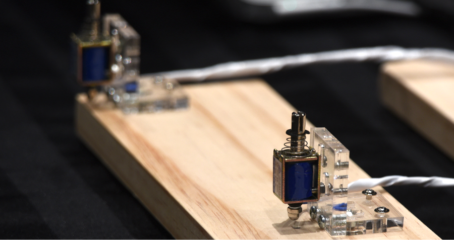
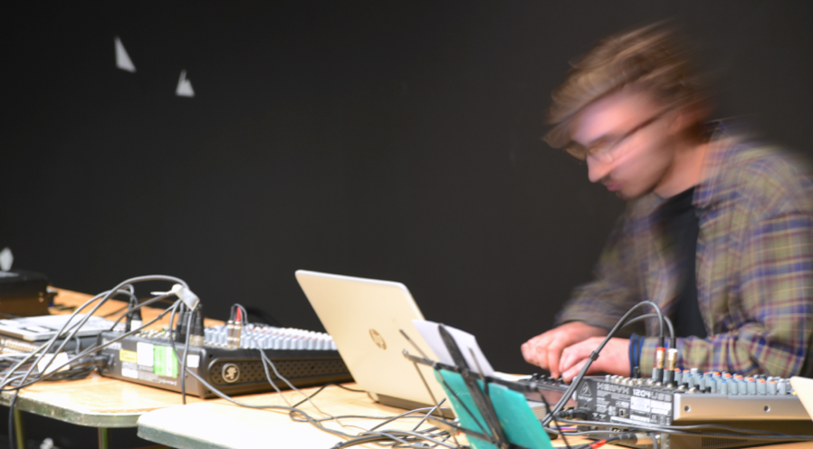
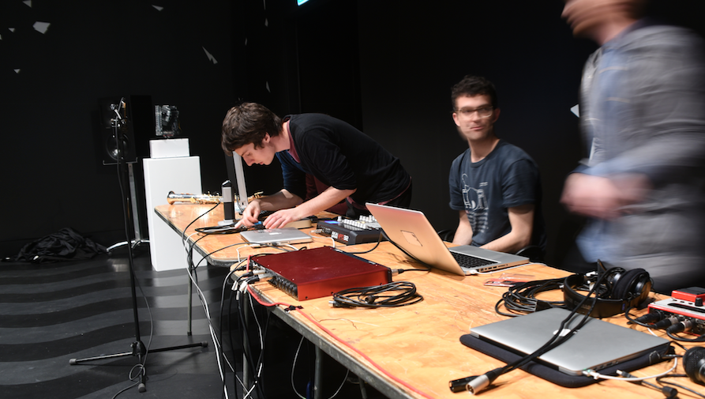

Posted on November 19, 2016 at 9:25 PM
SELCT researchers and Te Kōkī New Zealand School of Music (NZSM) composition students participated in a one-of-a-kind response to “Movement”, a work exhibited at the Dowse Museum in Lower Hutt. This performance (dubbed “Resonance” by organiser and SELCT faculty member Mo Zareei) included a broad range of sonic performances that showcased a wide array of current student areas of artistic interest in SELCT and the wider New Zealand School of Music’s Composition department.
The concert opened with “Broken Mirror” by SELCT PhD student Jason Long. “Broken Mirror” featured the Closed Loop Robotic Glockenspiel. The Glockenspiel features magnetic pickups beneath each bar, allowing the signals from the solenoid-struck bars to be transduced and used both for feedback control of the instrument and for amplification and spatialisation.
Following “Broken Mirror” was “fugue state II” by NZSM Composition undergraduate Marcus Jackon. Making use of a number of miniature solenoids that struck in morphing patterns along strips of wood (shown above), “fugue state II” was a timbral exploration of physical objects.
After the first two mechatronically-driven pieces, Resonance moved into a series of pieces for live electronics. The first of these pieces was “Broken,” by NZSM Sonic Arts undergraduate George Johnston. Making use of sounds derived from discarded and broken electronics, Johnston “wrestles with the technology he uses to create, by destroying it.”
NZSM Sonic Arts undergraduate George Aitken followed Johnston’s piece with “Controlled Feedback,” a computationally-mediated no-input mixer performance. Through the use of feedback and gating, Aitken derived complicated and dense sounds from simple technology, beguiling the audience with mere hints of rhythms that morphed into undulating noise.
The middle portion of Resonance concluded with “Ces’toid’e`a: Tape Worm” by Paul Dunham (an undergraduate in the NZSM Sonic Arts program). This piece consisted of an augmented tape player, gutted to expose its internal working and parasitically covered in contact microphones and magnetic pickups. During the piece, Dunhman repositioned the picks and microphones, exposing the audience to different aspects of the microsounds present within the tape player.
Resonance concluded with a number of performances on SELCT alumnus Bridget Johnson’s speaker.motion mechatronic loudspeakers. The first of these was recent NZSM Honours student Flo Wilson’s “(Please) Keep Breathing”, which addressed the complicated relationship between the human body and technology. Wilson created a choreographed series of movements for the speaker.motion units that served to accompany her live vocal performance.
Following Wilson’s vocal exploration on speaker.motion was “pours, sieves, twists” by NZSM students Glen Downie, Reuben Jelleyman, and Chris Wratt (above). In this piece, Downie performed a live improvisation on his saxophone; the sound was processed in real time by Jelleyman and spatialised by Chris Wratt (who sent MIDI commands to the speaker.motion units). The result was a dynamic and organic fusion of acoustic, electronic, and mechatronic performance practices.
Resonance closed with “rise.risset” by Blake Johnston. In this piece, Johnston (a current SELCT PhD student) created a number of psychoacoustic illusions that were spatially modulated using the speaker.motion unit. Though this was the third performance of this piece (after showings at New Zealand’s National Library and the Adam Art Gallery), each iteration has shown the impact of room acoustics on speaker.motion performances; this variability highlights the creative control afforded by re-positionable loudspeakers.
Resonance represents the first collaboration between SELCT, NZSM, and the Dowse Museum. The audience was treated to a truly diverse and engaging series of student works. Special thanks to Sian Van Dyk for curatorial and organisational assistance, and for making the Dowse space available.